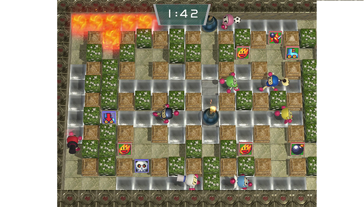
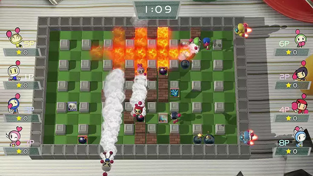
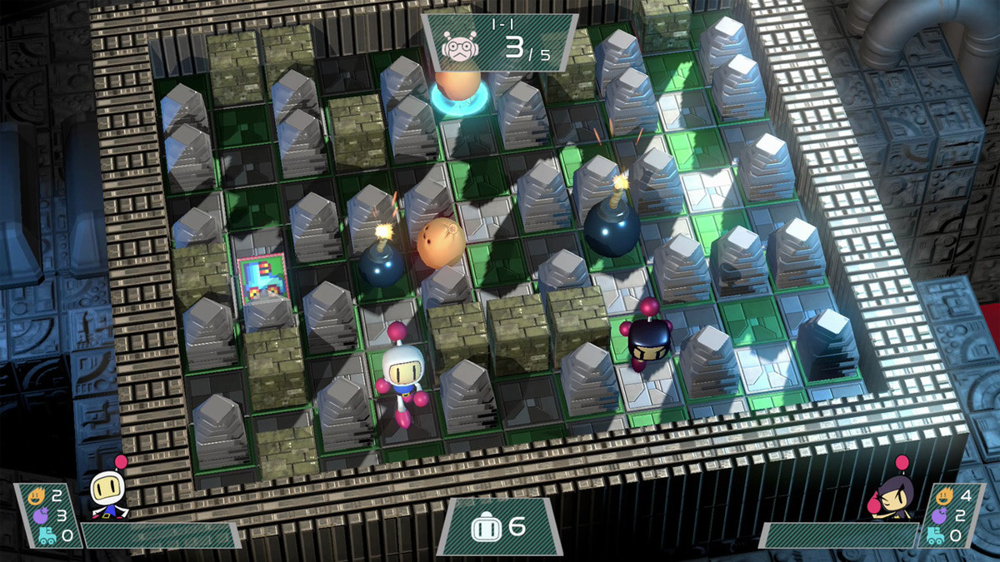

Shicheng Chu and Yifei Zhao Proposal
Summary
We will create a game looks like super bomberman. In this game, we will create a simple maze and simple AI for enemies. Also, after the bomb explodes, it will leave some special effect
Example Images

Game has a sample maze.

The game also have some special effect like flame and smog.

If player hits an obstacle, he dies.
After dying, user will be taken to game over screen with his score displayed.
Framework and Techniques
Our game will be modeled after Temple Run, but without 90 degree turns. The play will be brought to a start menu when opening the game. Pressing enter will start the game. The character will then see their character running and obstacles in the way. To avoid hitting the obstacles, the play can move left (left arrow), right (right arrow), or jump (spacebar). If the player collides with an obstacles, then the game will end, and the score will be shown on a game over screen If needed, we will use Blender or another similar piece of software for custom animations. To handle collision, we will most like use rigid body collision. We will also implement phsyics if needed to make the animations look more realistic. As the game goes on, we will randomly place more obstacles to make it harder. To create an infinite path, we will use pathigen
Projected Timeline
- April 6 - Project Proposal Due
- April 8 - Create character and get character to respond to proper input keys
- April 10 - Finish creating infinite path. Assure that character can only run on path and will only turn at turns. Start working on generating random obstacles.
- April 15 - Ideally finish process for generating random obstacles. Make sure character dies if intersecting obstacle. Assure that character can manuver around obstacle. Start working on start/end screen and point accumulation.
- April 120 - Finished process for generating random obstacles. Make sure character responds appropriately when intersecting an object (death). Start work on scenery, textures, and other aesthetics.
- April 25 - Finished working on aesthetics (add scenery, textures). Refine the visual and sound components of the game. Start final testing to make sure everything works
- April 25 - Short presentation
- April 30 - Ideally finished testing. Ideally finished with project. Ideally submitted project.
- May 1 - Final project due.
Projected Work Split Up
Ben:
- moving left and right
- jumping and sliding
- generating random obstacles
- collision detection
- testing
Zachary:
- generating infinite path
- point accumulation
- dying
- making the game look good(appealing visuals, smoothness of the game, etc.)
- testing